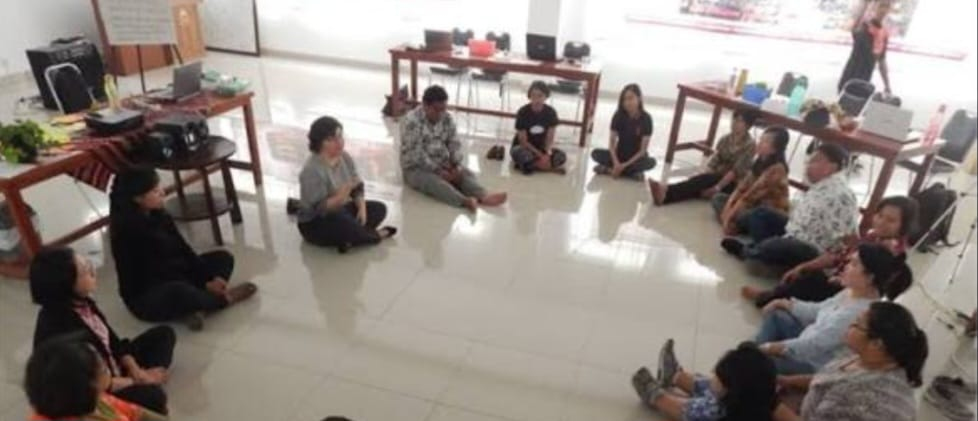

Pemberitaan kabar baik dan firman kebenaran secara konsisten di ibadah raya mingguan.

Pendampingan pastoral, konseling keluarga, dan persekutuan doa syafaat bagi jemaat yang berbeban berat.
Aksi sosial dan kepedulian nyata menjangkau masyarakat serta mereka yang membutuhkan pertolongan.